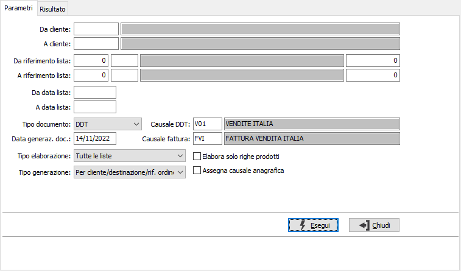
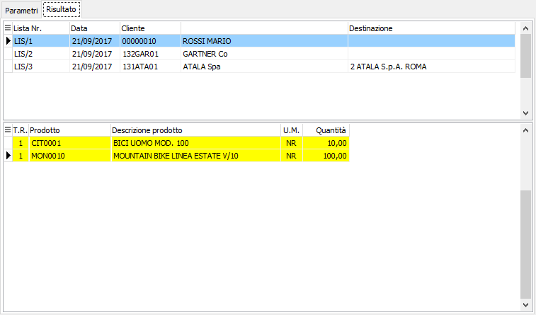

Generazione documenti da liste di prelievo
Il programma effettua la generazione di DDT o Fatture direttamente evadendo
in maniera automatica le liste di prelievo. Tramite le preferenze dell'anagrafica clienti è possibile
indicare il tipo di documento preferenziale da generare.
Il programma si articola su due finestre video. La prima, Parametri,
consente la definizione dei parametri di selezione delle liste da evadere.

DA CLIENTE: codice
del cliente, presente in anagrafica clienti, da cui si vuole iniziare
la selezione di analisi. Confermando a vuoto, la selezione inizia dal
primo cliente valido. Sul campo sono attive le funzioni di ricerca (F9).
A CLIENTE: codice
del cliente, presente in anagrafica clienti, con cui si vuole terminare
la selezione di analisi. Confermando a vuoto, la selezione termina con
l’ultimo cliente valido. Sul campo sono attive le funzioni di ricerca
(F9).
DA RIFERIMENTO LISTA:
tre campi per contenere rispettivamente anno, causale e numero della lista
da cui si vuole iniziare la selezione. Confermando a vuoto, la selezione
inizia dalla prima lista compatibile con gli altri parametri.
A RIFERIMENTO LISTA:
tre campi per contenere rispettivamente anno, causale e numero della lista
con cui si vuole concludere la selezione. Confermando a vuoto, la selezione
termina con l'ultima lista compatibile con gli altri parametri.
DA DATA LISTA: data
della lista da cui deve iniziare l’analisi. Confermando a vuoto, l’analisi
inizia con la prima lista valida.
A DATA LISTA: data
della lista con cui si desidera terminare l’analisi. Confermando a vuoto,
l’analisi si conclude con l'ultima lista valida.
TIPO DOCUMENTO: definisce
il tipo documento da generare: DDT oppure fattura.
DATA GENERAZ. DOC.:
indicare la data che si vuole assegnare ai documenti generati.
CAUSALE DDT: causale
di DDT da utilizzare per la generazione dei documenti. Il campo è obbligatorio.
CAUSALE FATTURA: causale
di fatturazione da utilizzare per la generazione dei documenti. Il campo
è obbligatorio.
TIPO ELABORAZIONE:
definisce la tipologia di liste di prelievo da considerare: tutte le liste,
solo liste intestate o solo liste non intestate.
ELABORA SOLO RIGHE
PRODOTTI: definisce se devono essere considerate solo le righe delle liste
che contengono un codice prodotto (casella con segno di spunta) oppure
tutte (casella vuota).
TIPO GENERAZIONE:
definisce
il criterio di raggruppamento per la fase di generazione documenti: per
cliente/destinazione/ordine, per cliente/destinazione, per cliente.
Assegna
causale anagrafica: Se la casella è spuntata, al documento verrà
assegnata la causale del cliente (se presente) definita nella linguetta
preferenze. La casella è visibile se in configurazione del modulo Vendite
non è attiva l'opzione "Contabilizzazione diretta".
Confermando tramite pressione del bottone Esegui, viene avviata la selezione
e richiamata la finestra di selezione delle liste.

Le liste di prelievo vengono visualizzate su due griglie, una per le
testate e l'altra per le righe.
E' possibile selezionare o deselezionare le righe con il doppio clic
del mouse, il menù corrispondente al tasto destro del mouse oppure il
tasto F11 o F12 per la selezione di tutte le righe selezionabili; è anche
possibile selezionare con CTRL+F11, o deselezionare tutte le liste presenti.

|
L’assegnazione
delle matricole in fase di generazione liste di prelievo deve
essere effettuata al termine dell’elaborazione; prima del salvataggio
viene aperta la finestra di assegnazione
massiva matricole per completare l’assegnazione; la stessa
funzionalità è disponibile prima del salvataggio tramite l’utilizzo
del pulsante Matricole. Se non vengono assegnate tutte le matricole
viene dato comunque un avviso e viene richiesto se proseguire
col salvataggio, in caso affermativo sarà eventualmente possibile
completare successivamente l’assegnazione delle matricole tramite
la variazione delle liste di prelievo |
Al termine delle operazioni, quando viene premuto il tasto F10 oppure
il pulsante Salva nella tool bar compare la finestra di conferma della
generazione dei documenti. Al termine della registrazione, viene richiesto
se si deve effettuare la stampa diretta dei documenti generati.